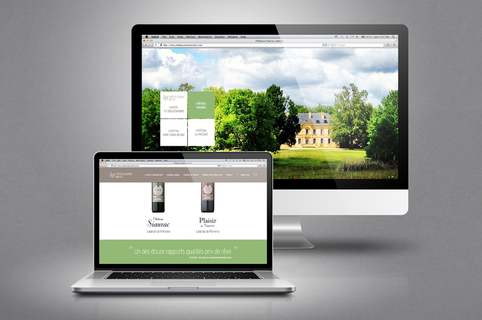
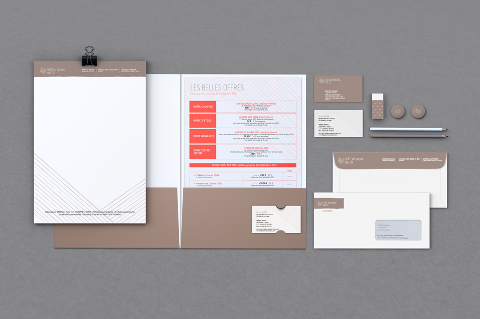
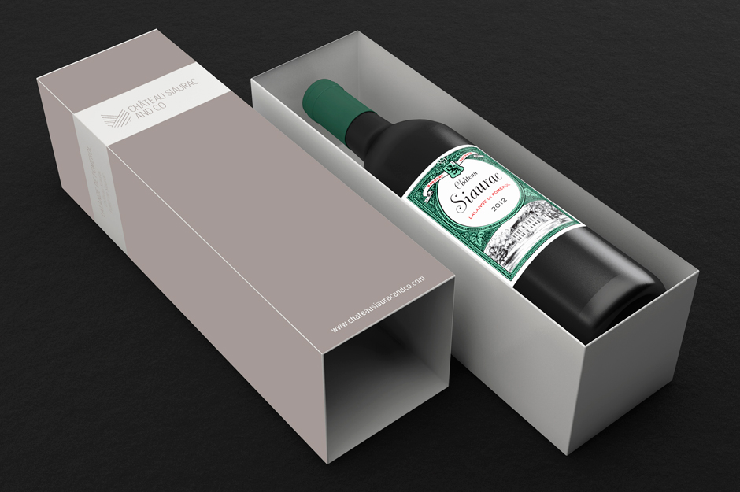
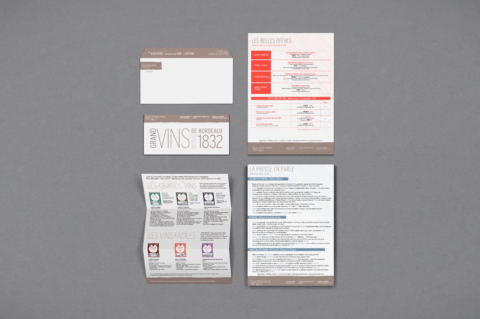
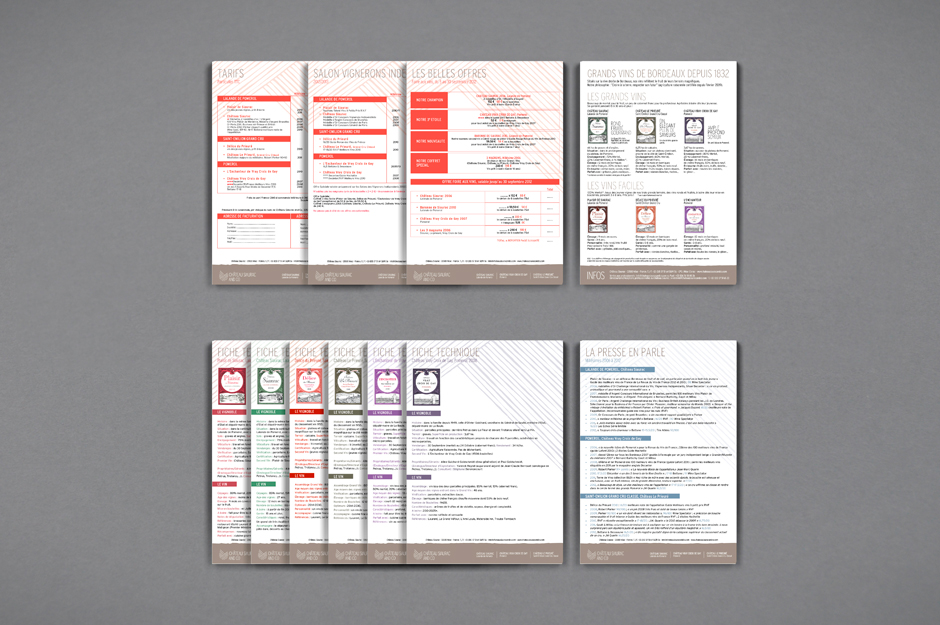
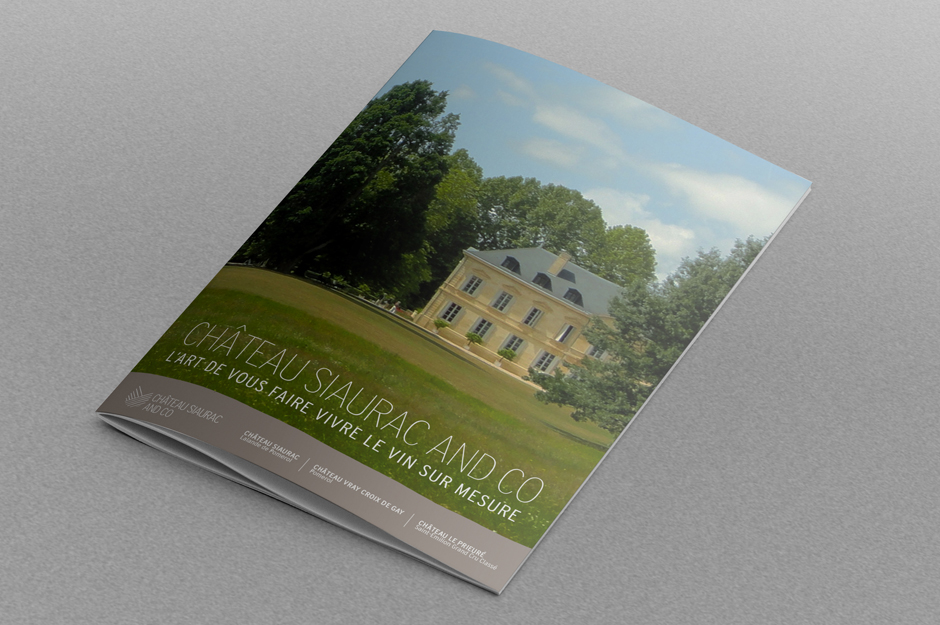
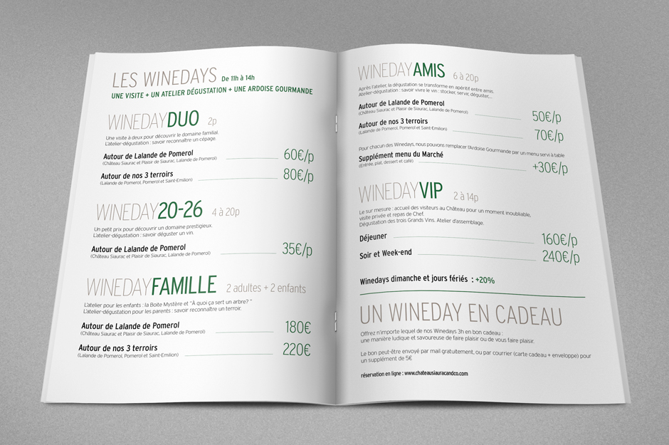
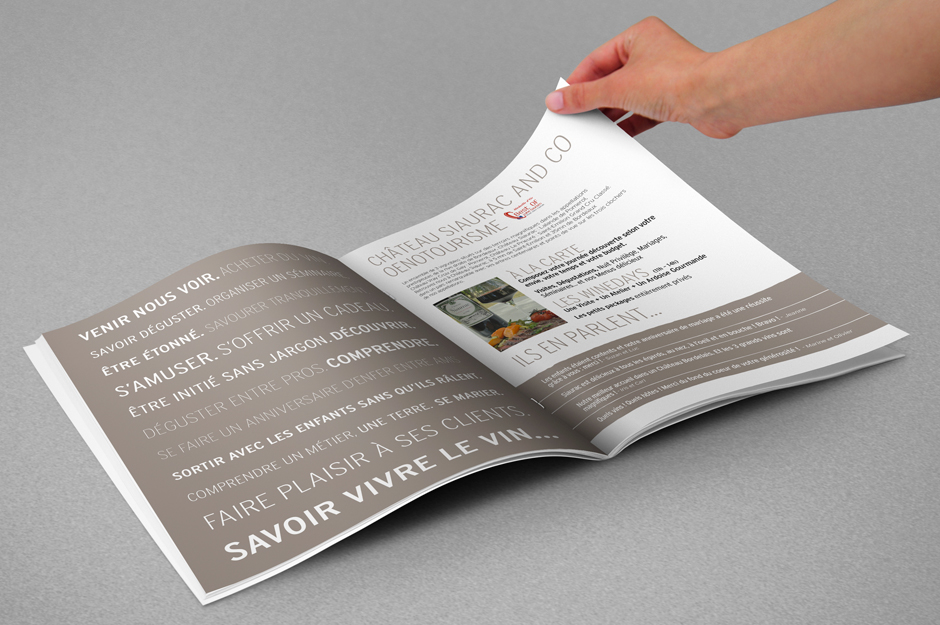

Rebranding for Château Siaurac and Co,
a french vineyard close to Bordeaux.
Renaming "Vins Baronne Guichard" into "Chateau Siaurac and Co"
implies to communicate on business activity,
on wine and vineyard
(the brand has a huge chateau and wanted it to be highlighted)
and in order to create a brand identity that fits with the activity.
In terms of graphic identity, we had to stick to the existing wine label
and color code that goes with it.
The choice was to have neutral but elegant
color for the graphic identity.
Our main objective was to move from a lack of
graphic unity between all supports (print & web) to a strong one linking all there media.
brand identity / website design / guidelines / packaging / editiorial design / various printed collaterals
       